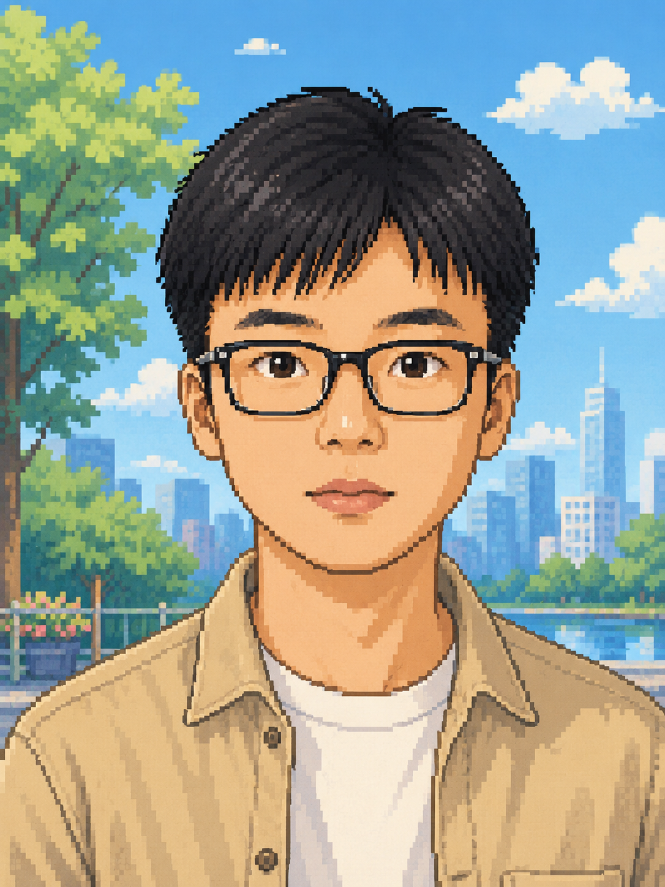
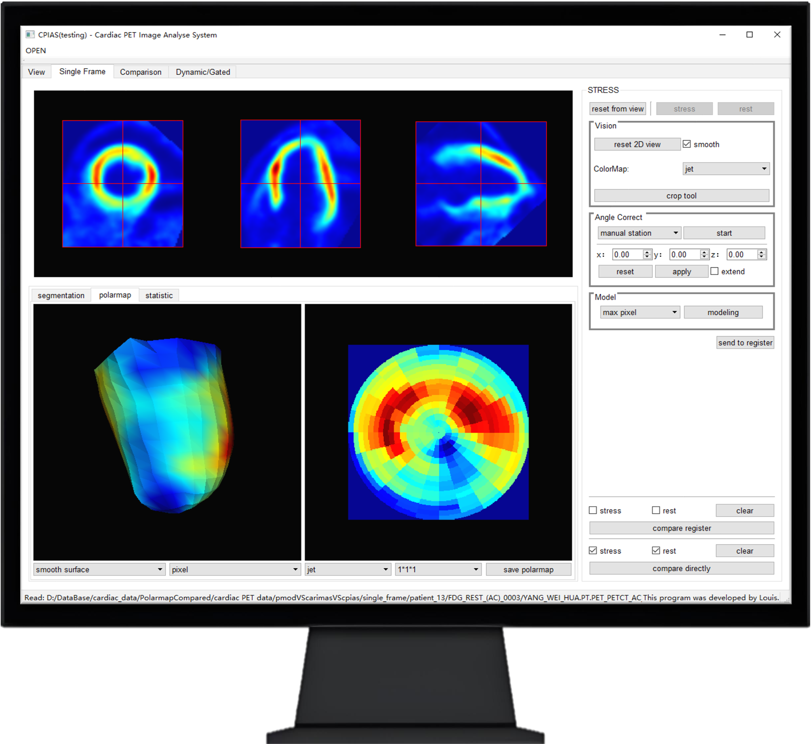
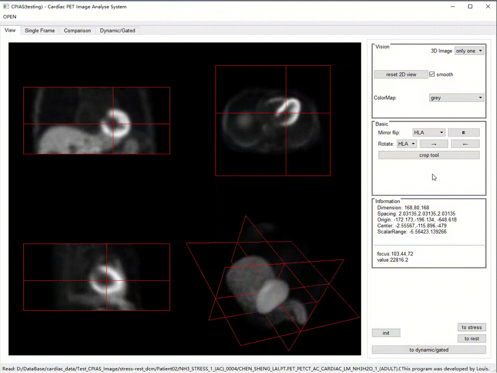
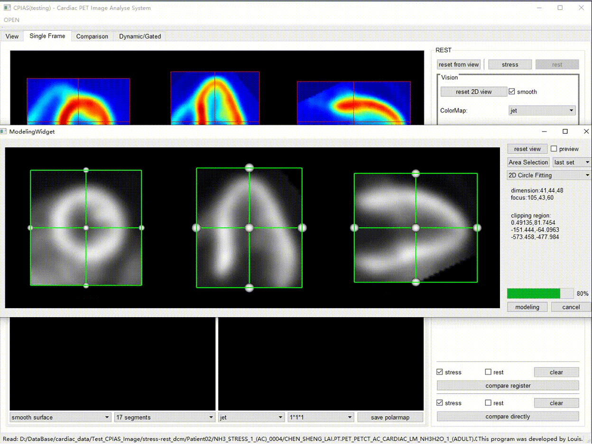
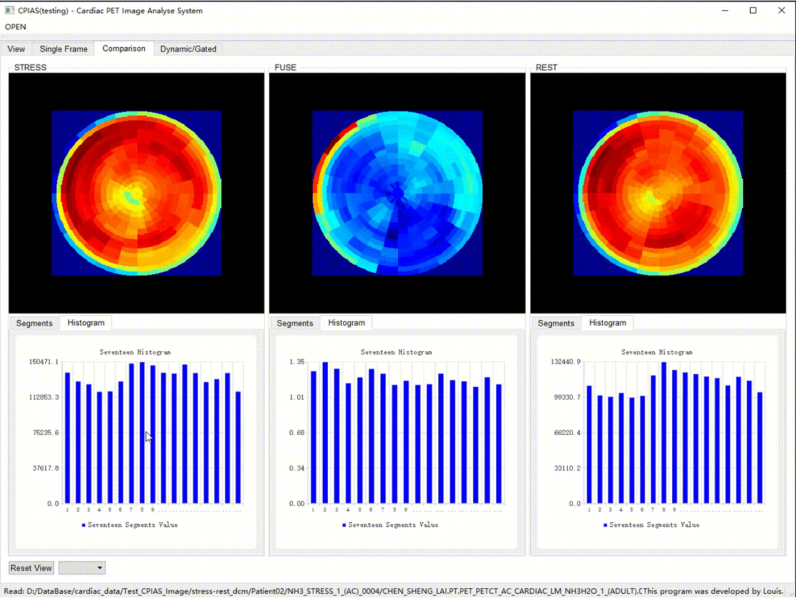
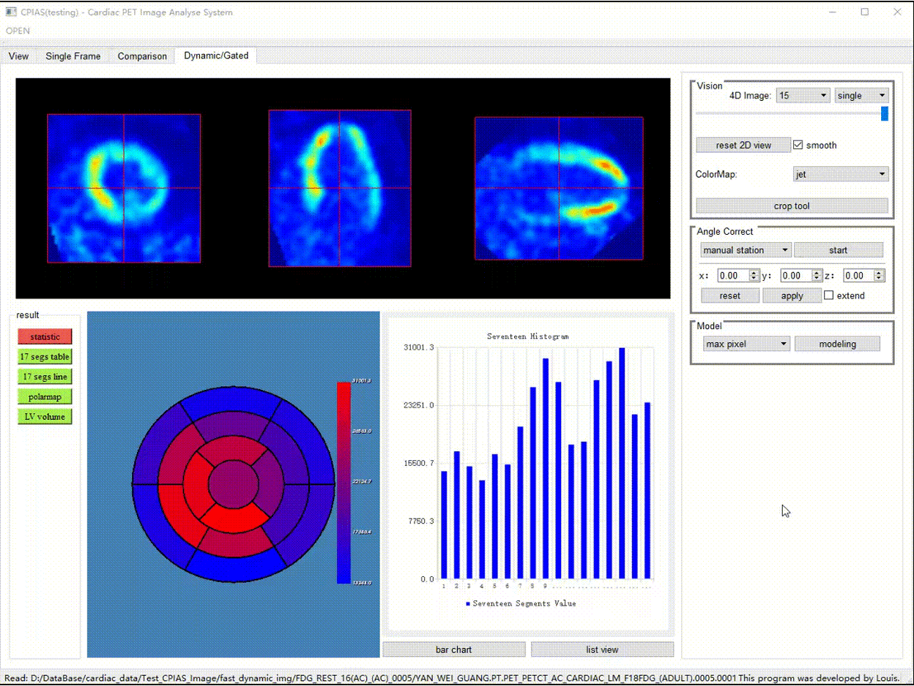
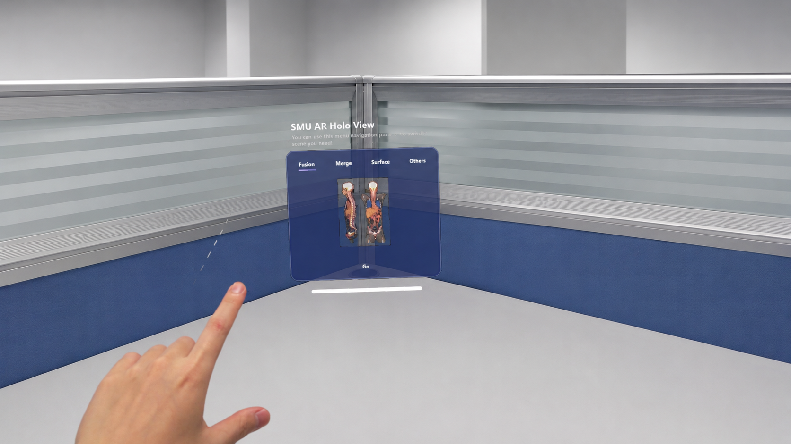
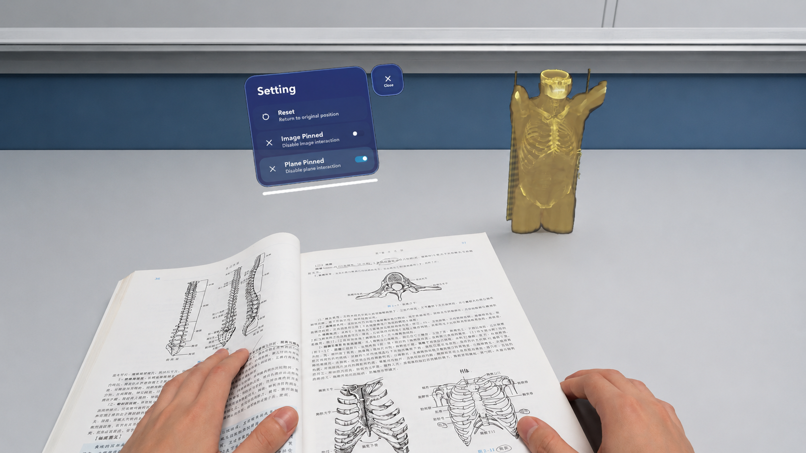
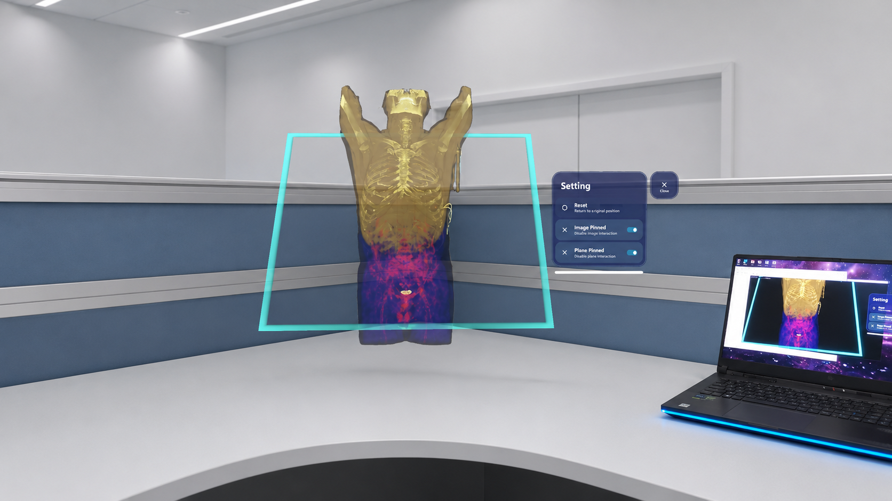
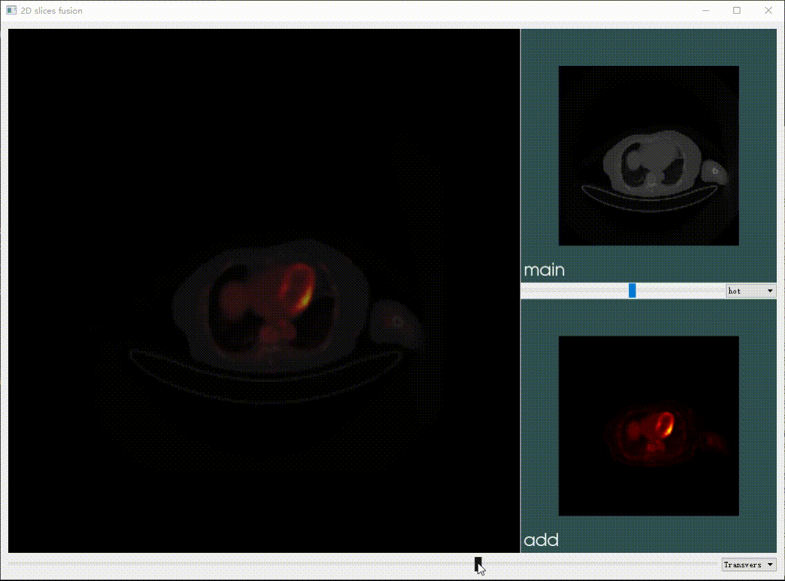

My path began in automation engineering, where I learned to think in systems — signals in, decisions out. During my master's at Southern Medical University, that habit of mind found a richer subject: the human body imaged through PET, CT, and MR. I came to see medical images not as pictures, but as spatially resolved physiological measurements, and the analyst's task as preserving the integrity of that measurement from acquisition to clinical interpretation.
Working on a PET/CT post-processing platform for myocardial perfusion and metabolism, and later on a multi-modal 3D reconstruction system, I became fascinated by problems that sit between pure computer vision and clinical reality: how to make automated segmentation robust enough to trust, how to fuse anatomy and function in a way clinicians actually reason with, how to turn a 4D image into a quantitative trend rather than a movie.
Since joining the Department of Nuclear Medicine at Guangdong Provincial People's Hospital as a technologist, I have been on the other side of this equation — running scanners, performing QC, and seeing how analytical tools succeed or fail in daily clinical use. This experience is shaping the questions I most want to pursue in doctoral research: quantitative nuclear medicine imaging, AI-assisted functional image analysis, and the design of clinically grounded image processing systems. I am actively seeking a Ph.D. position where I can continue this line of work.
我的研究起点是自动化工程——在那里，我学会了以系统思维思考问题：信号输入，决策输出。在南方医科大学攻读硕士期间，这种思维方式找到了更丰富的研究对象：通过PET、CT和MR呈现的人体图像。我逐渐认识到，医学影像不仅仅是图片，而是空间分辨率的生理测量，而分析者的任务是从采集到临床解读全程保持测量数据的完整性。
在参与心肌灌注与代谢的PET/CT后处理平台开发，以及后续多模态三维重建系统的工作中，我开始着迷于纯计算机视觉与临床现实之间的问题：如何使自动分割足够可靠以值得信赖，如何以临床医生实际思考的方式融合解剖与功能信息，如何将4D图像转化为定量趋势而非简单的动态影像。
加入广东省人民医院核医学科担任技师后，我站在了这一方程式的另一侧——操作扫描仪、执行质控，亲眼见证分析工具在日常临床中的成功与局限。这段经历正在塑造我最希望在博士研究中深入探索的问题：定量核医学影像、AI辅助功能影像分析，以及临床导向的影像处理系统设计。我正积极寻求博士研究机会，以延续这一研究方向。
Robust quantification of perfusion, metabolism, and tracer kinetics from PET/CT and SPECT data — with particular attention to reproducibility, motion correction, and the gap between research-grade and clinical-grade pipelines. 从PET/CT和SPECT数据中对灌注、代谢和示踪剂动力学进行稳健定量——特别关注可重复性、运动校正，以及研究级与临床级处理流程之间的差距。
Application of CNN and U-Net family architectures to segmentation, lesion detection, and parametric mapping in low-signal, low-resolution modalities where data is scarce and physics-aware priors matter. 将CNN和U-Net系列架构应用于低信号、低分辨率模态中的分割、病灶检测和参数映射——这些模态数据稀缺，且物理先验知识至关重要。
Registration and joint interpretation of PET / CT / MR — including 4D dynamic series — to support clinical reasoning that crosses anatomy and function. Especially interested in cardiac and oncologic applications. PET/CT/MR的配准与联合解读——包括4D动态序列——以支持跨越解剖与功能边界的临床推理。尤其关注心脏和肿瘤学应用。
The engineering of medical image processing systems that survive contact with the clinic: DICOM-faithful pipelines, real-time interaction, validation against ground truth, and workflows that respect how clinicians actually read images. 开发能够在临床环境中经受考验的医学图像处理系统：忠于DICOM标准的处理流程、实时交互、对照真值的验证，以及符合临床医生实际阅片习惯的工作流程。
Designed a full PET/CT post-processing workflow targeting cardiac applications — from DICOM ingestion and pre-processing (cropping, reorientation) to deep-learning-assisted automatic/semi-automatic myocardial segmentation.
Built a quantification module computing myocardial blood flow, automatically identifying ischemic regions and grading their severity, and tracking perfusion change across multiple time points. Integrated joint analysis of PET perfusion and metabolic images, with bull's-eye plots, 3D myocardial reconstructions, and time-curve visualizations to support clinical reading of metabolic abnormalities.
设计了完整的PET/CT心脏应用后处理工作流——从DICOM摄取和预处理（裁剪、重定向）到深度学习辅助的自动/半自动心肌分割。
构建了心肌血流量化模块，自动识别缺血区域并对其严重程度进行分级，追踪多个时间点的灌注变化。集成了PET灌注和代谢图像的联合分析，包括靶心图、心肌三维重建和时间曲线可视化，以支持代谢异常的临床阅读。





Implemented 3D reconstruction, slice-based browsing, volumetric visualization, and interactive manipulation for PET-CT and MR data on top of ITK and VTK. Supported multi-modal fusion display so that annotations and segmentation results overlay correctly across anatomy and function.
Extended the system to 4D (time-resolved) imaging, with dynamic loading and frame-by-frame rendering — a prerequisite for analyzing functional and perfusion sequences. Developed an augmented reality rendering layer enabling immersive visualization for clinical education and communication.
基于ITK和VTK实现了PET-CT和MR数据的三维重建、切片浏览、体积可视化和交互式操作，支持多模态融合显示，确保注释和分割结果在解剖与功能维度上正确叠加。
将系统扩展至4D（时间分辨）影像，实现动态加载和逐帧渲染——这是分析功能和灌注序列的前提。开发了增强现实渲染层，支持沉浸式可视化，用于临床教育和医患沟通。







Designed the display interface of a multi-parameter monitor using Qt and OpenGL, including waveform-and-parameter region layout and dynamic configuration of line, font, and color properties. Implemented timed waveform refresh and redrawing via Qt's signal–slot mechanism, and integrated communication with the upstream data-acquisition system.
使用Qt和OpenGL设计了多参数监护仪的显示界面，包括波形与参数区域布局，以及线条、字体和颜色属性的动态配置。通过Qt的信号槽机制实现了定时波形刷新和重绘，并集成了与上游数据采集系统的通信。
Operating PET/CT and SPECT scanners; acquiring, processing, and quality-controlling nuclear medicine image data in a clinical workflow. Assisting physicians with post-processing and analysis — particularly in myocardial perfusion and tumor metabolism studies — which has deepened my understanding of how imaging biomarkers are actually used in diagnosis and follow-up.
This direct clinical exposure is the empirical foundation of my doctoral research interests.
操作PET/CT和SPECT扫描仪，在临床工作流中采集、处理和质控核医学影像数据。协助医生进行后处理和分析——尤其是心肌灌注和肿瘤代谢研究——这深化了我对影像生物标志物在诊断和随访中实际应用的理解。
这段直接的临床接触，是我博士研究兴趣的实证基础。
Taught courses in the Intelligent Medical Equipment and Health Big Data program, including microcontroller principles and applications, and fundamentals of big data — reinforcing my own technical foundations in embedded systems and data processing.
在智能医疗设备与健康大数据专业授课，包括单片机原理与应用、大数据基础——巩固了我在嵌入式系统和数据处理方面的技术基础。
Coursework: Mathematical Statistics & Stochastic Processes, Numerical Analysis, Digital Image Processing, Machine Learning. 课程：数理统计与随机过程、数值分析、数字图像处理、机器学习。
Coursework: Data Structures, Digital & Analog Electronics, Automatic Control Theory, Pattern Recognition. CET-4: 480 · CET-6: 435. 课程：数据结构、数字与模拟电子、自动控制理论、模式识别。英语四级：480 · 英语六级：435。
Recognition for an interdisciplinary medical-imaging project combining clinical need analysis with engineering implementation. 该奖项表彰了一个将临床需求分析与工程实现相结合的跨学科医学影像项目。
Steady and self-directed; comfortable owning a project across its full lifecycle, and equally comfortable translating between engineers and clinicians. I learn new technical stacks quickly and prefer depth over breadth. 沉稳自主，能够驾驭项目的完整生命周期，同时善于在工程师和临床医生之间架起沟通的桥梁。我能快速掌握新的技术栈，更偏向于深度而非广度。